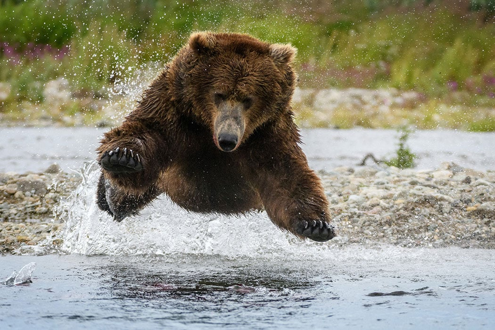
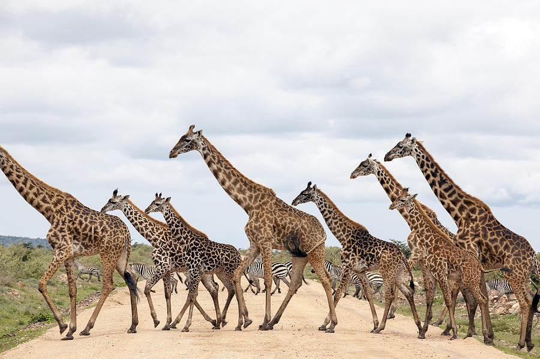
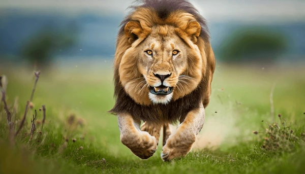
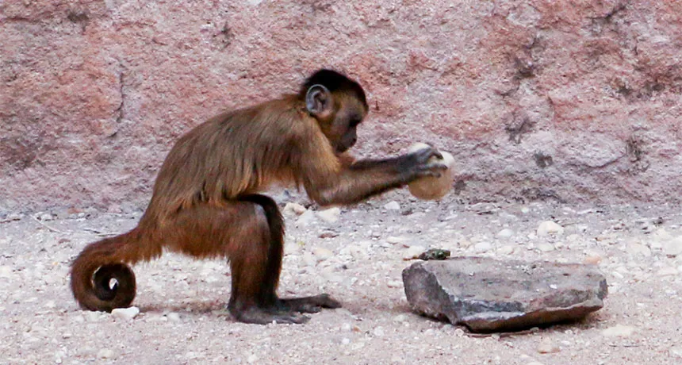
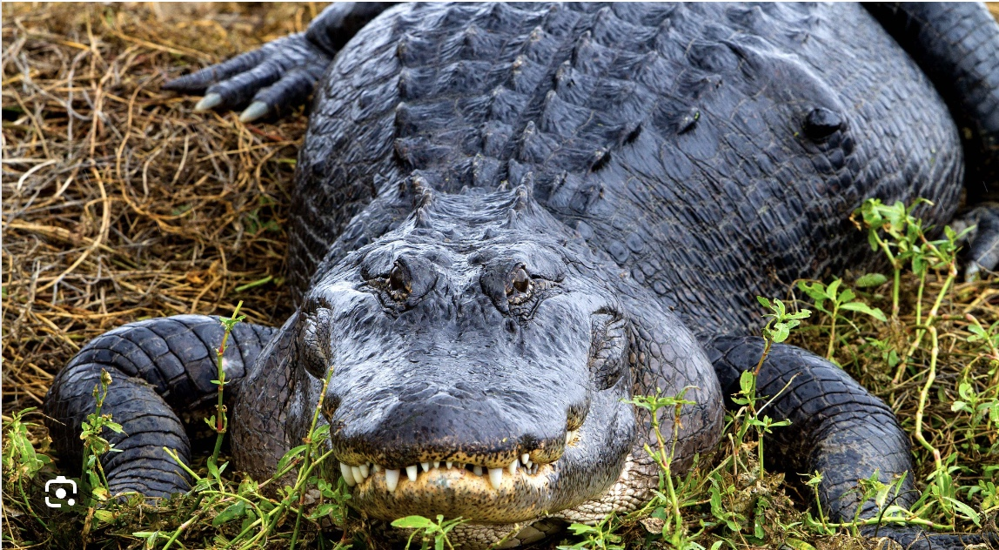

This page is going to show you different animals along with their names.

Description: In the dense forest, the bear moves with a silent grace, its
dark fur blending seamlessly with the shadows. With powerful muscles
rippling beneath its coat, it navigates fallen logs and rocky streams
effortlessly. Its keen sense of smell picks up the faintest scent of
berries or prey, guiding its path through the wilderness. When it stands
on its hind legs, towering over the undergrowth, it commands a presence
that speaks of ancient strength and untamed wildness.
- Ollie
- Mona

Description: In the sprawling African plains, the giraffe stands tall and
majestic, its long neck reaching toward the sky like a living skyscraper.
Covered in a patchwork coat of splotchy browns and creams, its elegant
form moves with a gentle grace, each step a deliberate extension of its
long legs. Large, expressive eyes peer out from a face adorned with
ossicones—horn-like projections—giving it a unique and regal appearance.
With each chew of leaves from the acacia trees, its tongue, long and
prehensile, curls delicately around branches, a testament to its
specialized adaptation.
- Frankie
- Coconut

Description: In the golden savannah, the lion prowls with an air of regal
confidence, its tawny coat shimmering in the sunlight. Muscular and lithe,
it moves with a fluid grace, each sinewy movement a testament to its
prowess as a predator. Its mane, a mane of flowing, dark tufts, frames a
powerful head adorned with piercing amber eyes that gleam with
intelligence and focus. With a deep, resonant roar that echoes across the
plains, the lion asserts its dominance over its pride and announces its
presence to potential rivals.
- Mella
- Karl

Description: In the lush canopy of tropical forests, monkeys swing through
the treetops with acrobatic skill and playful agility. Their fur, ranging
from vibrant oranges and yellows to deep browns and grays, blends
seamlessly with the foliage around them. Expressive faces adorned with
curious eyes and mischievous grins hint at their intelligence and social
nature. Agile tails act as a fifth limb, aiding in balance and gripping
branches effortlessly. With chatter and calls that echo through the
canopy, they communicate and forge intricate bonds within their tight-knit
troops.
- Cookie
- Earl
- Banana Pudding

Description: In the murky waters of swamps and rivers, the alligator lurks
as a prehistoric sentinel of the depths. Its armored body, covered in
tough, scaled skin ranging from dark olive to black, blends seamlessly
with the murky waters it calls home. Powerful jaws, lined with rows of
sharp teeth, snap open with astonishing speed, capable of crushing bone
and tearing through flesh with ease. Its eyes, positioned high on its
head, survey the water's surface with a cold, calculating gaze, waiting
patiently for prey to approach. With a stealthy glide and a flick of its
muscular tail, the alligator disappears beneath the surface, a silent
predator ready to strike.
- Wren
- Aspen
- Mika